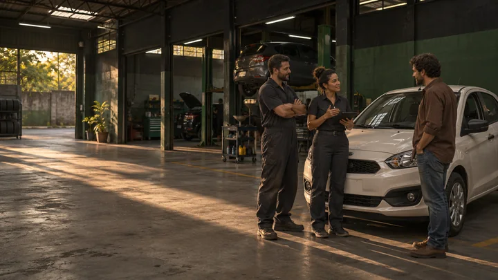
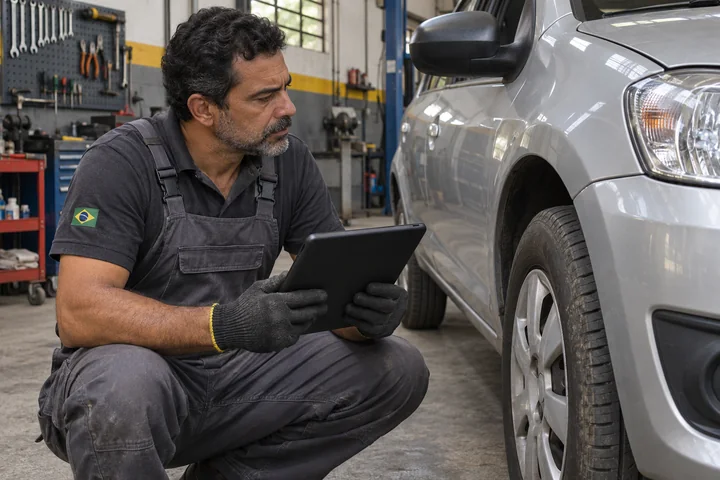
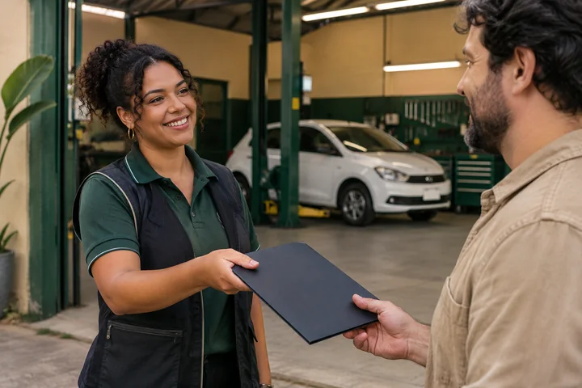

A conversa abre o atendimento.
Conte o que mudou, quando percebeu e o que gostaria que a oficina avaliasse.

Uma visita à Pista 22, da conversa no balcão à devolutiva da equipe.
Fazer a visita ↓Conte o que mudou, quando percebeu e o que gostaria que a oficina avaliasse.

O veículo é avaliado pela equipe. A conversa inicial ajuda a organizar o que observar e quais dúvidas esclarecer.

A oficina explica o que identificou e conversa sobre os próximos passos. Você pode esclarecer o escopo antes de aprovar o serviço.
O pedido reúne informações. Horário e disponibilidade são combinados na conversa com a oficina.
A devolutiva é o momento de entender o que foi observado e conversar sobre o escopo antes de aprovar.
O motivo, uma observação e o tipo de veículo. Esta demonstração não pede cadastro ou placa.
Comece com a sua observação. A equipe pode perguntar mais na primeira conversa.